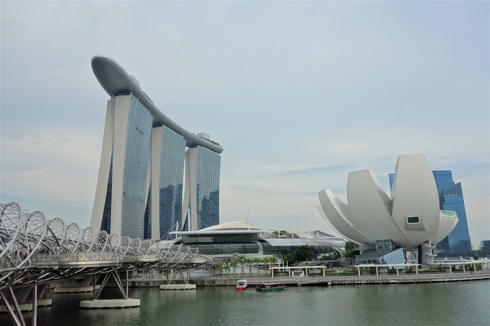

STUDY
私が筑坂で履修した授業の紹介です。

工学情報実習Ⅰ・Ⅱ
2年・3年生で履修しました。
筑坂の工場での作業が印象的です。
2年次で作ったライントレースカーに、
3年次で各自プログラミングを施し、
世界に1つだけの力作を作成しました。
筑坂の工場での作業が印象的です。
2年次で作ったライントレースカーに、
3年次で各自プログラミングを施し、
世界に1つだけの力作を作成しました。

カナダ校外学習
1年次の冬にトロントで約1週間滞在しました。
ナイアガラの滝に虹がかかっていた景色は、
忘れられません。
写真はカサロマ
ナイアガラの滝に虹がかかっていた景色は、
忘れられません。
写真はカサロマ

{kind=link}
卒業研究
”船員人材の多様化にむけて
――日本とシンガポールの事例から――”
というテーマで研究をしました。
シンガポールに調査もしに行くことができ、
貴重な経験をすることができました。
――日本とシンガポールの事例から――”
というテーマで研究をしました。
シンガポールに調査もしに行くことができ、
貴重な経験をすることができました。
FEATURE
筑波大学付属坂戸高等学校について
サイト名：
筑波大学付属坂戸高等学校
http://www.sakado-s.tsukuba.ac.jp/
コメント：
筑波大学附属坂戸高等学校は、総合学科高校としての歴史をスタートさせた1994年以来、時代のニーズに合わせながらカリキュラムや科目開発を進めてきました。
2019年には筑波大学が「WWL（ワールド・ワイド・ラーニング）コンソーシアム構築支援事業」に採択され、 本校のSGH（スーパーグローバルハイスクール）事業の成果を活かし拠点校として事業を進めていくことになりました。
また、国際バカロレア（IB）認定校として、IBの使命である
「多様な文化の理解と尊重の精神を通じて、より良い、より平和な世界を築くことに貢献する、探究心、知識、思いやりに富んだ若者の育成」を目指します。
筑波大学付属坂戸高等学校
http://www.sakado-s.tsukuba.ac.jp/
コメント：
筑波大学附属坂戸高等学校は、総合学科高校としての歴史をスタートさせた1994年以来、時代のニーズに合わせながらカリキュラムや科目開発を進めてきました。
2019年には筑波大学が「WWL（ワールド・ワイド・ラーニング）コンソーシアム構築支援事業」に採択され、 本校のSGH（スーパーグローバルハイスクール）事業の成果を活かし拠点校として事業を進めていくことになりました。
また、国際バカロレア（IB）認定校として、IBの使命である
「多様な文化の理解と尊重の精神を通じて、より良い、より平和な世界を築くことに貢献する、探究心、知識、思いやりに富んだ若者の育成」を目指します。
ABOUT
2020年もよろしくお願いしますね。
筑波大学付属坂戸高等学校３年C組３５番 山田です。
初めて作成したサイトです。
記念みたいな感じで残しますね。
SKILL
三年間で取得した資格です。
実用英語技能検定 準2級
1年生3学期に取得
英検適正レベルテストで準2級を受けろと
言われたので、、、。
英検適正レベルテストで準2級を受けろと
言われたので、、、。
日本漢字能力検定 準2級
1年生3学期に取得
とりあえず取れそうな急に挑戦。
とりあえず取れそうな急に挑戦。
危険物取扱者乙種4類
2年生3学期に取得
高校生が取れる国家資格ということで、
頑張りました。
高校生が取れる国家資格ということで、
頑張りました。
実用英語技能検定 2級
(勉強中！)
1/25に受けます。
一度落ちているので、頑張ります。
一度落ちているので、頑張ります。
CONTACT
ご連絡は、SNSかメールでお願いします。
yamada.type.sem@gmail.com